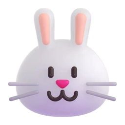

맥 메뉴바에 사는 작은 비서 — 캡처 · 녹화 · 녹음 · 통역 · 번역
실행.command를 더블클릭합니다.
실행.command를 우클릭(또는 Ctrl+클릭) → 열기 → 열기를 누르면 됩니다.
macOS 15 이상에서는 시스템 설정 → 개인정보 보호 및 보안 맨 아래의
"그대로 열기"를 눌러주세요. 처음 한 번만 하면 돼요.
Kit은 두 가지 모습으로 쓸 수 있어요. 기능은 완전히 같으니 편한 쪽을 쓰면 됩니다.
화면 맨 위 오른쪽의 🥕 당근 아이콘을 클릭하면 전체 메뉴가 열립니다. 녹화·녹음 중에는 아이콘 자리에 ⏺︎ 경과 시간이 표시돼요.
메뉴바 메뉴에서 "❖ 플로팅 팔레트 열기"를 누르면 화면 위에 토끼가 떠다녀요.
| 메뉴 | 하는 일 |
|---|---|
| 영역 캡처 | 마우스로 드래그한 부분만 캡처 |
| 전체화면 캡처 | 화면 전체를 캡처 |
| 창 캡처 | 클릭한 창 하나만 캡처 |
| 캡처 후 편집 | 캡처하자마자 편집창이 열림 |
| 캡처 폴더 열기 | 저장 폴더를 Finder로 열기 |
캡처하면 저장 폴더(기본: 바탕화면)에 캡처_날짜_시각.png로 저장되고 미리보기로 바로 열려요.
모자이크(개인정보 가리기) · 박스 · 화살표 · 펜 · 글자 · 자르기 — 원하는 도구를 누르고 이미지 위에서 드래그하면 돼요.
실수했다면 ↩︎ 실행취소. 다 됐으면 복사(바로 붙여넣기용) 또는
저장(_편집.png로 저장). 화면에는 작게 보여도 원본 화질 그대로 저장됩니다.
"화면 녹화 시작"을 누르면 화면 전체와 마이크 소리가 함께 녹화됩니다.
같은 메뉴를 다시 누르면 저장돼요 (녹화_날짜_시각.mov).
※ 유튜브 소리 같은 '컴퓨터 내부 소리'는 들어가지 않아요. 내 목소리(마이크)만 녹음됩니다.
회의·메모용 음성 녹음이에요. 멈추면 잡음 제거(팬 소리, 웅웅거림)를 거쳐
녹음_날짜_시각.m4a로 저장되고, 바로 글자로 변환할지 물어봐요.
이미 가진 녹음 파일(m4a, mp3, wav 등)을 고르면 시간표시가 붙은 텍스트 파일로 만들어줘요. 변환 중엔 메뉴바에 "⏳ 글자 변환중…"이 표시되고, 끝나면 자동으로 열립니다.
시작을 누르고 한국어로 말한 뒤 중지하면, 원문과 영어 번역이 함께 담긴 텍스트 파일이 만들어져요. 회의 내용 정리에 좋아요.
별도 창이 열리고, 말을 잠깐 멈출 때마다 자막처럼 원문과 번역이 떠요.
※ 완전 동시통역이 아니라 몇 초 따라오는 "거의 실시간"이에요. 말을 잠깐씩 끊어주면 더 정확해요.
도착 언어를 고르고 글을 붙여넣으면 바로 번역해요. 출발 언어는 자동 판별. 번역 품질: 한↔영 좋음 · 한↔일 양호 · 한↔중 보통.
바탕화면에 흩어진 파일을 이미지·동영상·문서·음악·압축·기타로 분류해서
정리됨_날짜 폴더로 옮겨줘요. 삭제는 절대 하지 않고 옮기기만 하고,
폴더는 건드리지 않아요.
맥은 화면과 마이크를 쓰는 앱에 허락을 요구해요. 처음 한 번만 설정하면 됩니다.
실행.command로 다시 켜요처음 녹음을 시작할 때 뜨는 창에서 허용만 누르면 끝이에요.
① "확인되지 않은 개발자" 경고라면 위 설치하기의 우클릭 → 열기 방법을 써요.
② 폴더를 다른 곳으로 옮겼다면 그냥 다시 실행.command를 더블클릭하면 돼요.
③ 그래도 안 되면 터미널을 열고 cat /tmp/biseo.log를 입력해 나온 내용을 확인해요 —
개발자에게 문의할 때 이 내용을 함께 보내주면 좋아요.
화면 기록 권한이 없어서예요. 권한 설정대로 켠 뒤 Kit을 껐다 다시 켜야 적용돼요.
마이크 권한을 확인하세요: 시스템 설정 → 개인정보 보호 및 보안 → 마이크에서 터미널(또는 Python)이 켜져 있어야 해요.
① 통역 창의 🎙 마이크 선택이 실제 쓰는 마이크인지 확인해요 (이어폰 연결 시 특히).
② "말하는 언어"가 맞게 선택됐는지 확인해요.
③ 문장 사이에 잠깐씩 쉬어주면 인식이 훨씬 정확해져요.
인터넷 연결을 확인하고 실행.command를 다시 더블클릭하세요.
이미 받은 부분은 건너뛰고 이어서 받아요.
네, 인텔 맥도 지원해요 (macOS 11 빅서 이상). 설치할 때 자동으로 인텔용
구성을 골라 설치합니다.
① 예전 버전에서 받았다면 ZIP을 새로 내려받아 다시 실행해 보세요.
② 파이썬 버전이 낮다는 메시지가 뜨면
python.org에서 최신 파이썬을 설치한 뒤
다시 실행하면 돼요.
③ 그래도 안 되면 검은 창에 나온 에러 문구를 복사해서
문의 게시판에 올려주세요.
첫 사용 때 AI 모델을 메모리에 올리느라 시간이 걸려요. 두 번째부터는 빨라집니다.
네! 설치만 끝나면 캡처·녹화·녹음·글자변환·통역·번역 전부 인터넷 없이 동작해요. (🌐 웹 도구 바로가기만 인터넷이 필요해요)
끄기: 메뉴바 아이콘 → 종료.
완전히 지우기: Kit 폴더를 휴지통에 버리면 끝이에요. 자동 시작을 켰었다면
먼저 설정에서 꺼주세요.
모든 처리는 내 컴퓨터 안에서만 이뤄져요. 녹음한 목소리, 캡처한 화면, 번역한 글 — 어떤 것도 외부로 전송되지 않아요. 회원가입도, API 키도 없어요.
인터넷은 최초 설치 때 한 번(AI 모델 다운로드)만 사용하고, 내려받는 파일은 체크섬으로 무결성을 확인해요.